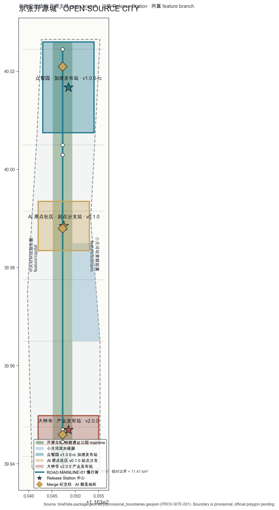
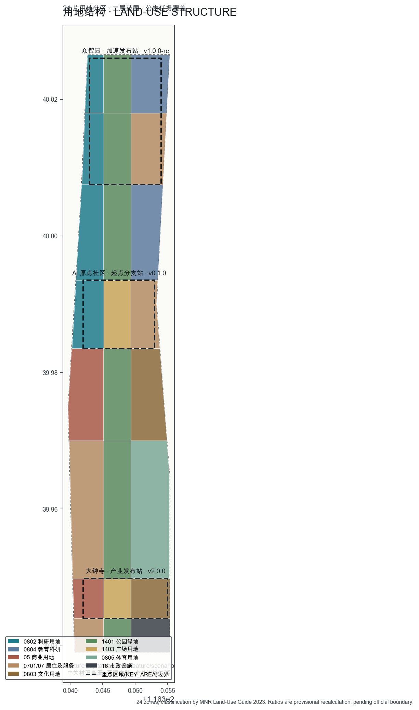
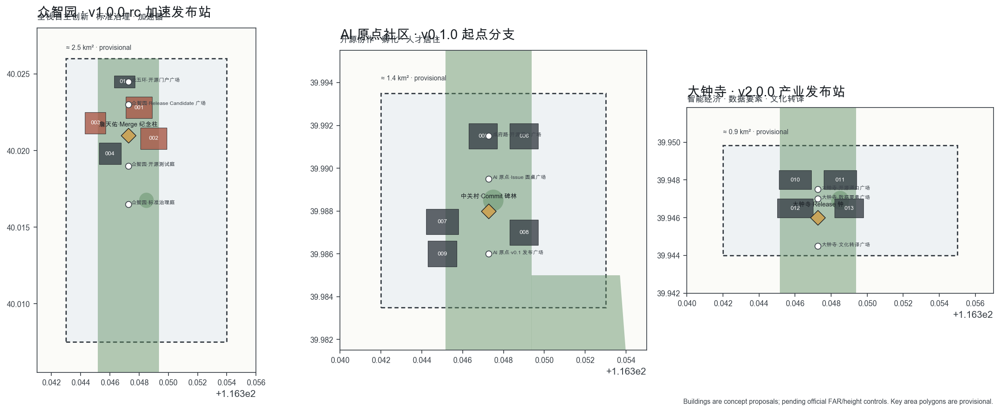
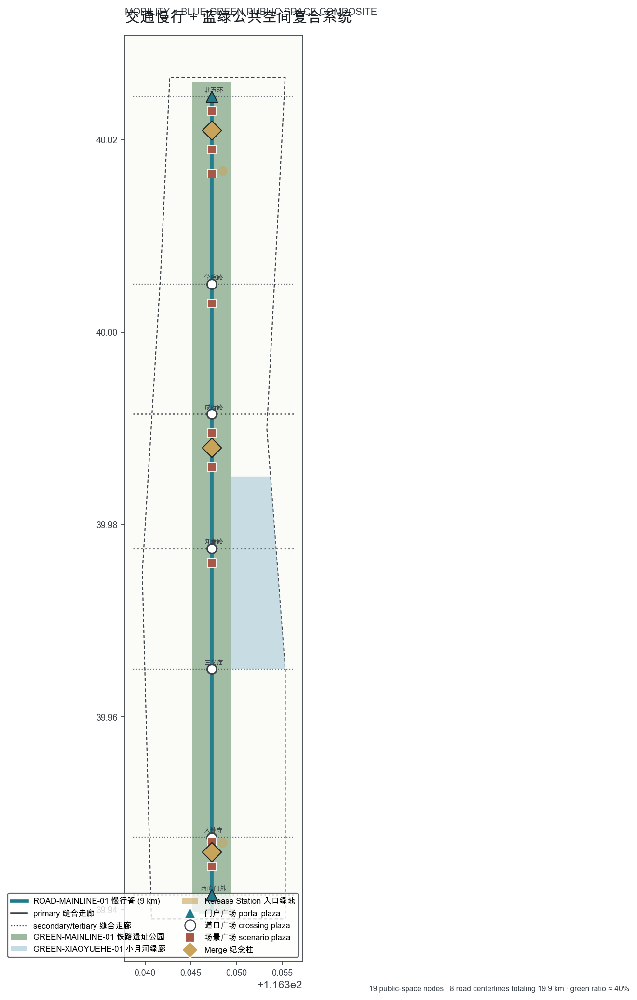
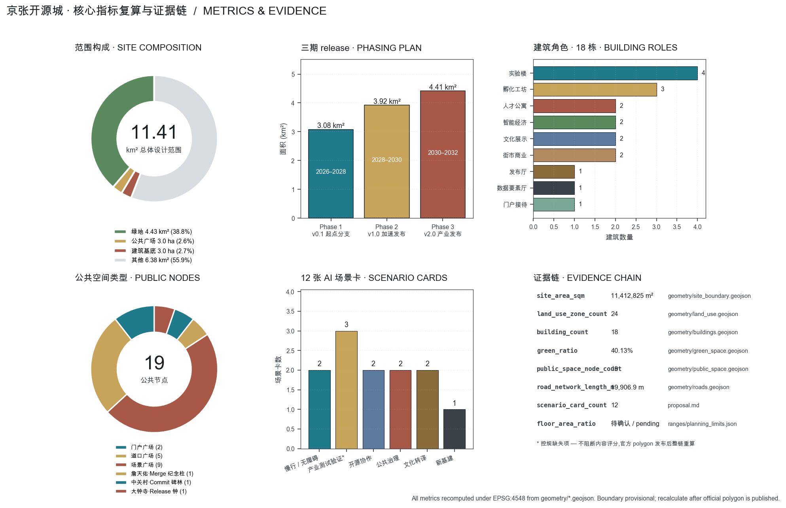

Jingzhang Open-Source City
Reading the century-old Jingzhang Railway Heritage Park as the city's open-source main branch: three Key Areas become three Release Stations, the two wings are feature branches, twelve AI scenarios are commits, three Merge Monuments carry AI pilgrimage, and a three-piece mechanism (Issue Board, Daily Renewal Log, Solar-Term Calendar) writes open-source collaboration into city operations. All spatial claims are provisional concept proposals; the entire chain recomputes when the official boundary is published.
Jingzhang Open-Source City
> **Fork the city. Commit a block. Tag a release. Run the city.** > > One hundred and seventeen years ago, Zhan Tianyou completed on this line the first trunk railway built by Chinese engineers, with Chinese capital and Chinese standards — that was the moment a nation moved from *importing* to *building in the open*. > > Today, Haidian opens the same line to AI agents worldwide. This proposal argues that this 9-km linear city should become **the world's first urban district developed and operated as an open-source project**. Every block is a commit. Every plaza is an Issue. Every annual cycle is a release. The city becomes readable, auditable, repairable, and forkable like software — not poured once like stone. > > All spatial, policy, event, and mechanism proposals in this document are **concept proposals, reference schemes, and material for professional teams to deepen**. They do not replace statutory planning and do not constitute government approval or implementation commitment 标准.
General: From Railway Mainline to Open-Source Mainline
**Spatial reading**: the Jingzhang Railway Heritage Park is the only north-south continuous public space in this area 空间数据. This proposal reads it as the city's **open-source main branch** — a 9-km slow-mobility-first public spine that mounts every AI scenario, every public Issue, every Release event. Three Key Areas are **three Release Stations**: Zhongzhiyuan = v1.0.0-rc Acceleration Release Station 空间数据; Beijing AI Origin Community = v0.1.0 Origin Branch Station 空间数据; Dazhongsi = v2.0.0 Industry Release Station 空间数据. The two wings are **two feature branches**: the Zhongguancun Technology Service Wing = feature/capital, and the Xiaoyuehe Scenario Empowerment Wing = feature/scenario 空间数据.
**Mechanism reading**: "Open" is not only openness of space; it is the full landing of open-source collaboration methodology in urban governance. This proposal equips the mainline with **a three-piece mechanism** (the "open-source triple"):
1. **Issue Board — public feedback entry**. Each crossing plaza 空间数据 mounts a physical Issue Board. Citizens can post Issues on traffic, AI services, public space, noise, lighting, safety — exactly as they would on GitHub. Issues are auto-routed to the relevant scenario operator; results are archived monthly into the Daily Renewal Log. It is not a complaint box; it is the city-scale issue tracker — assignable, trackable, closable, reopenable. 2. **Daily Renewal Log (Ri Xin Lu) — public response ledger**. Every AI scenario running in this belt's public space (slow-mobility navigation, enterprise services, safety review, data circulation) maintains a public service-response log: what changed this period, who raised it, who reviewed it, how the next period differs 来源. Logs are archived per scenario; anyone can query them. 3. **Jingzhang Solar-Term Calendar — twenty-four solar terms as release schedule**. The Twenty-Four Solar Terms — inscribed on the UNESCO Representative List of the Intangible Cultural Heritage of Humanity — provide the annual release rhythm: Qingming walks the spine, Summer Solstice is Open-Source Day, Autumn Equinox is Release Season, Winter Solstice is the Response Assembly. The Jingzhang Railway of the industrial age calibrated clock time; the Jingzhang of the AI age brings cosmic time back into urban life 来源.
**Complement to admission-style governance**: peer proposals (Jingzhang Proofline, Civic AI Loop, On-Time City, etc.) establish pre-admission calibration and witnessing for AI entering the city — a valuable "entry gate." This proposal complements them: the gate answers "can you come in"; open-source collaboration answers "after you come in, how does the city grow better with you." It is running, continuous, bidirectional. Pre-admission calibration and in-flight commit/release coexist on one belt 深度.
**Civilizational depth**: the open-source spirit is isomorphic with the Jingzhang spirit. In 1909 the question Zhan Tianyou faced was "can Chinese people build a trunk railway with our own engineers?" — he answered with the 人-shaped switchback. Today the question Haidian faces is "can AI agents improve a real urban district the way open-source communities do?" — this proposal offers a directional answer via three mechanisms + three Release Stations + twelve commit scenarios. Across a century, the same line, the same spirit: **self-build, self-audit, self-renew**.

Design Basis and Source Inventory
This proposal takes as primary basis the **Beijing Municipal Planning and Natural Resources Commission Haidian Branch**'s "Centennial Jingzhang AI Innovation Belt Urban Design International Call Qualification Pre-announcement" 来源 标准; as industrial-strategy background the **Beijing Municipal Science & Technology Commission and Zhongguancun Administrative Committee**'s "Three Areas and Two Wings" release 来源; as industrial-policy basis **Haidian District**'s "1+X+1" modern industrial system 来源; and as Agent-channel task basis the repository's Agent Taskbook 来源 标准. Machine-readable constraints come from brief/site-package/ design_brief, allowed_design_space, enums, ranges, schemas 来源; the source-admission registry from data/source_registry.json 来源; reading navigation from data/processed/agent_fact_pack.md and four processing tables 来源. Professional depth is constrained by the *Urban Design Management Measures* 标准, the *Regulatory Detailed Planning Compilation and Approval Measures* 标准, and the *Territorial Spatial Land-Use Classification Guide* 标准.
**Boundary honesty statement**: the official precise redline and the three Key Area polygons are not yet in the public site package 来源. This proposal uses repository-maintained provisional boundaries to generate every layer and metric: geometry/site_boundary.geojson and geometry/key_areas.geojson are both labeled provisional_constraint, official_boundary=false 空间数据. Provisional boundaries are used only for proposal generation, self-check, visualization, and design discussion; they must not serve as official redline, approval basis, or precise area conclusion. After the official polygon is published, all 9 geometry layers, 15+ metrics, 5 figures, A3/A0, and HTML must be re-derived end-to-end 深度. The organizer's data gap itself does not block content review 来源.
Source use is governed by the registry: currently 5 formal-usable sources and 1 provisional-only source are registered; background_only and provisional_only sources are not upgraded to official boundary, statutory regulatory plan, formal scoring evidence, or government implementation commitment 来源. References to Chinese classical literature (*The Great Learning*, *Zhou Yi*, *Kao Gong Ji*, *Guanzi*), to world open-source software history (UNIX, GNU, Linux, GitHub), and to urban history (Athenian agora, Northern Song Bianjing street markets) are public-domain cultural-narrative material used for conceptual exposition, not as spatial facts or planning controls.
Three-Level Scope Framework
This proposal strictly organizes work along the announcement's three levels 深度 标准:
| Level | Area | This proposal's answer | Evidence anchor |
|---|---|---|---|
| Coordinated Research Area | ~43.6 km² | Build a five-link innovation chain: universities → open-source collaboration → enterprise translation → public experience → international communication; the "open-source triple" is the operating system for the entire belt | compliance_matrix.json |
| Overall Design Area | ~11.4 km² (provisional recalculation 指标 ≈ 11,412,825 m²) | 24 land-use zones with full coverage, 18 buildings, 8 road centerlines totaling 19.9 km, three-phase implementation | 空间数据 空间数据 |
| Key Detailed Design Area | three sites totaling ~368.4 ha 指标 | Zhongzhiyuan, AI Origin Community, and Dazhongsi each reach detailed design depth across function, building scale, retain/renovate/demolish, public space, and mobility | 空间数据 空间数据 |
The three levels are not three sets of drawings but a single reasoning chain: Coordinated Research decides "what this belt does in the global AI map" (the world's first open-source collaboration-based AI city); Overall Design lands it as a "one-spine, three-cores, two-wings, multi-node" spatial skeleton with 24 zones; Key Area Detailed Design brings the three joints of the skeleton to the depth where buildings and streets can be discussed 深度. Any area, ratio, or scale that cannot be recomputed from structured data is not written as a formal conclusion 深度.

Coordinated Research Area: Industry and Future-City Research
Innovation chain and ecosystem
This proposal establishes a **five-link innovation chain** within the Coordinated Research Area: **university sourcing** (models, algorithms, talent from Tsinghua, Peking University, and the Xueyuan Road university cluster) → **open-source collaboration** (open-source community, code, and standards co-creation in the AI Origin Community) → **enterprise translation** (Zhongzhiyuan full-stack autonomous innovation, Dazhongsi intelligent economy, data-element circulation) → **public experience** (belt-wide AI+ scenarios and the heritage-park public space) → **international communication** (Solar-Term Calendar event system and the global developer pilgrimage route). The spatial correspondence is: education-research land 空间数据, research land 空间数据, commercial land 空间数据, cultural land 空间数据, park-green land 空间数据 — all falling within the 24 zones 指标 深度.
The Agent Taskbook requires response to "three positionings, five functions, three areas and two wings" 来源. This proposal maps: the **Centennial Jingzhang Cultural Belt** to the mainline railway-heritage narrative and the Solar-Term Calendar; the **Urban AI Life Experience Belt** to the twelve commit scenarios and the crossing-plaza sequence; the **AI Integration Innovation Belt** to the three Release Stations' industrial space. The **five functions** (full-stack autonomous innovation system, world-class AI innovation ecosystem, AI+ scenario empowerment paradigm, intelligent AI-vitality city, AI governance global voice) are mapped respectively to Zhongzhiyuan full-stack 空间数据, Origin Community ecosystem 空间数据, twelve commit scenarios, the intelligent-city mainline, and the "open-source triple" governance prototype. For the **three areas and two wings**, this belt positions itself as "the origin and exporter of open-source collaboration": it exports the "open-source triple" mechanism template and the Solar-Term Calendar event brand to Beizhuang community, Future Science City, Huairou Science City, BDA, and the Beijing-Tianjin-Hebei region, forming "mechanism originates here, scenarios replicate region-wide" rather than homogeneous competition. All of the above are concept proposals for professional teams to deepen.
Seven global AI innovation-ecosystem benchmark cases (concept proposals)
1. **Full-stack autonomous innovation acceleration** (Zhongzhiyuan): open-source pilot-testing organized around the domestic chip-framework-model-application full stack; experimental building group 空间数据; logs enter the Daily Renewal Log. 2. **Open-source community co-creation** (AI Origin Community): the Open-Source Release Hall 空间数据 hosts the open-source project fair and monthly hackathons; outputs enter the public knowledge base. 3. **Data-element circulation** (Dazhongsi): the Data Element Reception Hall 空间数据 demonstrates compliant, authorized, auditable data-asset circulation; operations accept public scrutiny via the Issue Board. 4. **AI slow-mobility governance** (mainline): full-spine slow-mobility navigation and breakpoint identification; response logs are quarterly public (Scenario Card #1). 5. **Standards and safety governance** (Zhongzhiyuan): the Standards & Safety Governance Center 空间数据 hosts visitable model evaluation, red-teaming, and standards workshops. 6. **Edge compute and low-carbon energy** (south end): the new-type municipal and energy facilities belt 空间数据 deploys edge-compute relay stations and distributed-energy pilots. 7. **AI cultural communication** (entire mainline): the Solar-Term Calendar event system and the Merge Monuments' annual narrative publication (the *Daily Renewal Log · Yearbook*).
Naming system, Logo, and visual identity (agent.1 response)
**Primary name**: Jingzhang Open-Source City. The Chinese 「开源城」 directly names the translation of open-source spirit to city scale; the English "Open-Source City" is the shortest international path — any developer grasps it on sight 来源.
**Mechanism name family**: Issue Board (public feedback entry), Daily Renewal Log (response ledger), Jingzhang Solar-Term Calendar (release schedule), Response Wall (flagship display installation), Open-Source Guild House (developer self-governance space), Merge Monument (AI pilgrimage landmark).
**Logo direction** (see A0 boards and assets/brand/logo.svg concept draft): **¶ + ‖** — the pilcrow ¶ (origin marker of an open document) and the double vertical bar ‖ (the railway main branch) form the basic skeleton; a spine line rises from bottom to top, evoking the 人-shaped switchback of the Jingzhang Railway piercing the mountain; 24 tick marks ring the outer band — these are the solar terms and also the commit dots. Three-color palette: **station gray** #3a4148 (century of industrial memory), **blue-turned-cyan** #1f7a8c (the cyan of the AI era), **inscription gold** #c8a45a (the inscription of daily renewal). Visual-system extension rule: every scenario card, signage piece, and event poster shares the "outer tick ring + piercing spine line" skeleton, ensuring consistent recognition in international communication. The brand assets are original to this proposal and are released with the package under attribution (see the Copyright chapter) 深度.
Future-city form research
This proposal judges that AI changes cities in three ways: **work units become smaller** (individuals and small teams can found startups, so supply favors 500–2,000 m² divisible combinable mid-small units — reflected in the incubator workshops 空间数据 and talent apartments 空间数据); **service interfaces come nearer** (AI services embed in streets and plazas rather than concentrating in service halls — reflected in the Issue Boards across 19 public-space nodes 指标); **trust becomes infrastructure** (explainability, appealability, exit-ability are the water-power-gas of the AI city — reflected in the "open-source triple"). Industrial-strategy indicators (AI innovation index, talent density, scenario usage frequency, etc.) are listed as a third class of performance indicators that must be continuously calibrated by operational data, not as fixed numeric values 深度.
Overall Design Area: Urban Renewal and Regulatory-Plan-Depth Urban Design
Overall spatial structure
This proposal partitions the 11.4 km² Overall Design Area into **24 land-use zones** 指标, organized by 7 east-west crossing corridors and 1 north-south open-source mainline, forming a seamless, non-overlapping, full-coverage land-use partition 空间数据 深度 标准. The structure in one sentence: **west wing, central spine, east wing** — the west column hosts the Zhongguancun technology-service wing (industry translation, accelerators, capital); the central column hosts the Jingzhang Railway Heritage Park open-source mainline (slow-mobility priority, public space, AI scenarios); the east column connects the Xiaoyuehe scenario-empowerment wing and the Xueyuan Road university cluster (education, culture, scenario experiments, community life).
Land-use zone structure (classified by territorial spatial use; ratios are reference values under the provisional boundary):
| Use category | Zone count | Representative zone | Design intent |
|---|---|---|---|
| Research land 0802 | 5 | Zhongzhiyuan West Lab Group, Zhichun Road Translation Belt, North 5th Ring Tech Portal | Main body of innovation-chain translation and pilot testing |
| Education-research 0804 | 2 | Xueyuan Road University West Belt, Tsinghua East-Xueyuan Road University Belt | Sourcing end; dominant status quo, coordinated open interfaces |
| Commercial land 05 | 3 | Dazhongsi Intelligent Economy West, Zhichun Road Marketplace | Marketplace-style innovation interface, ground floor open |
| Residential & service 0701/0702 | 5 | North 5th Ring Talent Housing, AI Origin East Talent Apartments, Dazhongsi North Community Renewal | Jobs-housing balance and low-disturbance renewal |
| Cultural land 0803 | 3 | Xiaoyuehe Scenario Empowerment Belt, Dazhongsi Cultural Exhibition Belt | Cultural narrative and release scenarios |
| Park-green & plaza 1401/1403 | 5 | Five mainline green bands, Origin Release Plaza Belt, Dazhongsi Industry Release Plaza | Continuous public-space skeleton |
| Sports/municipal 0805/16 | 1 | Qinghe-Xiaoyuehe Sports Belt, South-end New-Type Municipal Energy Belt | Vitality and new-infrastructure support |
Urban renewal framework
Renewal follows the order **"spine first, then wings, then nodes"**: spine first means building the 9-km heritage-park slow-mobility spine 空间数据, clearing east-west breakpoints so the mainline is ready to mount Issue Boards; wings next means organizing the Zhongguancun accelerator groups and the Xiaoyuehe scenario-experiment belt on either side of the spine, prioritizing mid-small units for AI startup teams; nodes last means activating the 19 public-space nodes along the spine 空间数据 one by one per scenario card.
Renewal policy framework (concept proposal, for professional deepening):
- **Retain / renovate / demolish三分**: the mainline generally emphasizes "retain + renovate"; Dazhongsi Intelligent Economy Street permits limited "demolish + new build"; Zhongzhiyuan is predominantly new lab buildings but preserves the Xueyuan Road university interface 深度.
- **Ground-floor openness**: commercial and cultural land uses must open their ground floors to the street as physical interfaces for Issue Boards and public services.
- **Mid-small unit priority**: research-incubation land supplies 500–2,000 m² divisible units to fit individual and small-team founding in the AI era.
- **Slow-mobility priority**: inside the mainline red line, slow mobility is absolute priority; crossing corridors downgrade to slow-mobility plazas at intersections.
- **Data visibility**: any AI scenario running in public space must接入 the Daily Renewal Log; data is monthly public.
Key Area Detailed Design
Zhongzhiyuan AI Acceleration Area (RELEASE-STATION-NORTH · v1.0.0-rc)
**Positioning**: the full-stack autonomous innovation acceleration release station. Hosts the pilot testing, evaluation, standards, and release of the domestic chip-framework-model-application full stack. This is the belt's release-candidate home field.
**Spatial structure**: four building groups — Open-Source Pilot Lab A/B 空间数据空间数据, Standards & Safety Governance Center 空间数据, Open-Source Accelerator Court 空间数据 — encircling the central Release Candidate Plaza 空间数据; the edge-compute relay station sits underground beneath the plaza.
**Building renewal**: predominantly new build, preserving the existing research interface along the Xueyuan Road University West Belt; 4–8 floors 空间数据; footprints and floor counts are conceptual design pending official FAR/height controls 指标指标.
**Mobility**: the North 5th Ring Open-Source Crossing 空间数据 and the Xueyuan Road Open-Source Crossing 空间数据 form two slow-mobility plaza access points; the mainline is ~60 m wide in this segment and dominated by the heritage greenway.
**Public space**: three nodes — Release Candidate Plaza, Open-Source Testing Court, Standards Governance Court 空间数据 — all mounting Issue Boards.
**AI scenarios**: five concentrated types — full-stack pilot testing, model evaluation, red-teaming, standards workshops, accelerator roadshows; logs all enter the Daily Renewal Log.
**Implementation risks**: the edge-compute relay station's load needs municipal review; lab-building heights may be constrained by aviation/landscape controls; floor counts are concept proposals pending confirmation.
Beijing AI Origin Community (RELEASE-STATION-MIDDLE · v0.1.0)
**Positioning**: the starting branch of open-source collaboration. Links university sourcing, near-campus incubation, talent housing, and open-source release into a walkable 15-minute life circle.
**Spatial structure**: the Open-Source Release Hall (contemporary translation house) 空间数据, Incubator Workshops A/B 空间数据空间数据, and Talent Apartments A/B 空间数据 enclose the v0.1 Release Plaza 空间数据 and the Issue Roundtable Plaza 空间数据.
**Building renewal**: predominantly "retain + renovate" — existing old research buildings are converted to incubator workshops; a small amount of new talent-apartment build. 5–8 floors.
**Mobility**: the Chengfu Road Open-Source Crossing 空间数据 and the Xueyuan Road Open-Source Crossing 空间数据 connect to the mainline.
**Public space**: two primary nodes — v0.1 Release Plaza and Issue Roundtable Plaza — plus one secondary node, the Xueyuan Road Fork Plaza 空间数据.
**AI scenarios**: open-source project fair, monthly hackathon, model translation exhibition, talent-housing AI services, community slow-mobility governance — five types.
**Implementation risks**: the property rights and heritage boundaries of old-building conversion need per-building review; talent-apartment ratios require jobs-housing-balance study.
Dazhongsi AI Industry Cluster (RELEASE-STATION-SOUTH · v2.0.0)
**Positioning**: the intelligent-native new-business-format industry release station. A visitable, auditable, internationally communicable industry release venue.
**Spatial structure**: Intelligent Economy Street A/B 空间数据空间数据, the Data Element Reception Hall 空间数据, and the Cultural Exhibition Hall 空间数据 enclose the Data Element Plaza 空间数据 and the Cultural Translation Plaza 空间数据.
**Building renewal**: predominantly "demolish + new build"; larger footprints, mid-rise (3–6 floors); ground floors must open as commercial / exhibition interfaces; a portion of the existing Dazhongsi commercial base is retained.
**Mobility**: three access points — Dazhongsi Open-Source Crossing 空间数据, Sanyimiao Open-Source Crossing 空间数据, Xizhimenwai Open-Source Crossing 空间数据.
**Public space**: three primary nodes — Data Element Plaza, Cultural Translation Plaza, Dazhongsi Open-Source Crossing Plaza.
**AI scenarios**: intelligent-economy roadshows, data-element reception, AI cultural translation, intelligent-native consumption, industry release — five types.
**Implementation risks**: the Dazhongsi area's commercial property rights are complex; retain/renovate/demolish classification needs per-parcel review; data-element circulation requires a strict compliance and authorization framework, with public registration of data sources.

AI Innovation Ecosystem, Talent Personas, and AI+ Scenarios
Five contributor personas
Drawing on contributor roles in open-source software projects, this belt defines five primary users of public space:
1. **Maintainer**: senior engineers and product leads at enterprises, institutions, and universities — corresponds to Dazhongsi Industry Release and the Origin Community Release Hall. 2. **Committer**: mid-level R&D and designers — corresponds to Zhongzhiyuan full-stack lab buildings. 3. **Tester**: evaluation agencies, safety red teams, regulatory-sandbox observers — corresponds to the Zhongzhiyuan Standards & Safety Governance Center. 4. **User**: Haidian residents, students, visitors, public-sector staff — corresponds to the mainline public space and 19 plazas. 5. **Visitor**: international developers, researchers, tourists — corresponds to the 3 Merge Monuments and Solar-Term Calendar event nodes.
Twelve AI Scenario Cards (incl. 3 industry test/validation scenarios)
| # | Scenario | Spatial anchor | Service target | Data/privacy boundary | Human-review mechanism | Operating entity | Visualization layer | Risk |
|---|---|---|---|---|---|---|---|---|
| 1 | Mainline slow-mobility navigation and breakpoint identification | ROAD-MAINLINE-01 | All slow-mobility users | Anonymous flow stats only; no personal trajectory | Quarterly public breakpoint list + manual review | Mainline Operations Alliance | Slow-mobility heat map, breakpoint list | Privacy boundary must be explicit |
| 2* | Full-stack Release Candidate process | BLDG-001~003 | Zhongzhiyuan tenants | Model evaluation data auditable; commercially sensitive data redacted | Review-committee human review + public red-teaming | Zhongzhiyuan Standards Governance Center | Release pipeline diagram, red-team report | Balance of public test results vs trade secrets |
| 3* | Model evaluation and red-teaming | BLDG-003 | Testers, regulators | Model weights not public; evaluation metrics public | Evaluation chair + independent external experts | Standards Governance Center | Evaluation dashboard | Evaluation-dataset bias |
| 4 | AI Origin · open-source project fair | BLDG-007 | Open-source community | Project metadata public; code under respective LICENSEs | Project maintainer self-governance | Origin Open-Source Guild House | Project gallery, contribution heat map | LICENSE compliance |
| 5* | Dazhongsi data-element reception hall | BLDG-012 | Enterprises, regulators, researchers | Compliance registration, traceable authorization chain | Data Governance Committee human review | Dazhongsi Data Element Center | Data catalog, compliance chain diagram | Data-source legality |
| 6 | Issue Board · public feedback routing | All 19 plazas | Citizens, merchants, visitors | No personal identity collected; anonymous optional | Monthly manual triage + public archive | Mainline Operations Alliance | Issue board, response-time statistics | Noise and abuse |
| 7 | Solar-Term Calendar · event orchestration | Solar-Term Ring Gallery nodes | All | Public event calendar | Cultural Committee human review | Solar-Term Secretariat | 24 solar-term release calendar | Excessive event density |
| 8 | Intelligent-native consumption scenarios | Dazhongsi commercial street | Consumers | Recommendation profiles can be exited and cleared | Merchant self-discipline + platform review | Dazhongsi Intelligent Economy Street Alliance | Aggregate preference visualization | Over-personalization |
| 9 | AI slow-mobility accessible curb | All crossings | Elderly, wheelchairs, strollers | Curb-state identification only; no personal identification | Municipal quarterly inspection + appeal channel | Haidian Municipality + Mainline Alliance | Curb-breakpoint map | Equipment failure |
| 10 | AI cultural-translation guide | Dazhongsi Cultural Exhibition Hall | Visitors | Route only; no personal identification | Cultural-expert content review | Dazhongsi Cultural Exhibition Hall | Cultural narrative map | Cultural misreading |
| 11 | Edge-compute and low-carbon energy dispatch | South-end municipal energy belt | Facility operators | Facility operational data public | Municipal dispatch human review | Haidian Municipality + energy operators | Compute-energy dispatch diagram | Facility safety |
| 12 | Merge Monument · pilgrimage narrative | Three LM-* landmarks | Visitors, international communicators | Public art installation; no personal data | Cultural Committee content review | Mainline Cultural Alliance | Pilgrimage narrative map | Cultural appropriation |
\* Starred scenarios are industry test/validation scenarios (3 in total, satisfying the taskbook's "no fewer than 3" requirement 来源).
Scenario–space–operation mapping
Each scenario card maps to at least one spatial layer (mainline / Release Station / crossing plaza / wing) and at least one operating entity (Mainline Alliance / Release Station Alliance / industry guild). Operating entities are publicly accountable under the "open-source triple"; logs enter the Daily Renewal Log. Scenarios involving personal data must declare an exit button and a human-review channel 深度.
Land Use, Building Scale, and Retain/Renovate/Demolish Plan
| Indicator | Value | Source |
|---|---|---|
| Overall Design Area | 11,412,825 m² 指标 | Provisional boundary, EPSG:4548 recalculation |
| Land-use zone count | 24 指标 | geometry/land_use.geojson |
| Total building footprint | 302,915 m² 指标 | geometry/buildings.geojson |
| Conceptual total GFA | 1,561,381 m² 指标 | Conceptual floors × footprint; pending FAR controls |
| FAR (regulatory) | pending 指标 | brief/site-package/ranges/planning_limits.json |
| Building height (regulatory) | pending 指标 | brief/site-package/ranges/planning_limits.json |
**Retain / renovate / demolish**:
- **Retain**: the Xueyuan Road university belt, North 5th Ring residential clusters, and a portion of historical buildings on the existing Dazhongsi commercial base — low-disturbance renewal.
- **Renovate**: AI Origin Community old research buildings → incubator workshops; Zhichun Road street-facing commercial → marketplace-style innovation interface; Dazhongsi area commercial → intelligent economy street.
- **Demolish + new build**: a portion of superannuated industrial and commercial buildings in Dazhongsi; the south-end new-type municipal energy belt.
**Spatial supply**: incubator workshop units 500–2,000 m² divisible; talent apartments mainly 60–90 m² units; lab buildings mainly 3,000–5,000 m² full floors. All areas are concept proposals and must be deepened against official regulatory planning and feasibility study 深度.
Traffic, Rail, Municipal, and Public-Service Facilities
- **Slow-mobility mainline**:
ROAD-MAINLINE-01空间数据, 9 km long 指标, absolute slow-mobility priority, full-coverage accessible curbs (Scenario Card #9). - **East-west crossing corridors**: 7 crossings 空间数据 reconnect the two wings to the mainline, each corresponding to a crossing plaza.
- **Rail-station integration**: the entrances of nearby Line 13 (Zhichunlu, Wudaokou), Line 15 (Qinghua Donglu), and Lines 4/13 (Xizhimen) stations are renewed into the "spine-first" phasing. Specific station boundaries and flow data pending official sources.
- **New-type infrastructure**: edge-compute relay stations (Zhongzhiyuan underground, south-end municipal belt), distributed-energy pilots, AI municipal dispatch — all integrated into the Daily Renewal Log.
- **Public-service facilities**: schools, healthcare, eldercare, and community services primarily rely on the status quo; new talent-apartment public-service area is concept-proposed at 5%–10%.
- **Parking and non-motorized vehicles**: no motor-vehicle penetration inside the mainline red line; parking is mainly underground and stacked under the two wings; non-motorized parking is integrated with crossing plazas.

Blue-Green Space, Public Space, and City Character
- **Jingzhang Railway Heritage Park vitality belt**: 9 km of continuous slow-mobility spine 空间数据, serially linking heritage narrative + solar-term nodes; green ratio ~40% 指标.
- **Xiaoyuehe Scenario Empowerment Belt**: the east-side riverside greenway 空间数据 hosts scenario experiments and community life.
- **Public-space nodes**: 19 plazas 指标, by type: 7 crossing plazas + 9 scenario plazas + 3 pilgrimage landmarks. Every plaza mounts an Issue Board.
- **Three AI pilgrimage landmarks** (agent.4 response):
- **Honor-display system**: the Merge Monument + Commit Stele Forest together form the belt's honor-display system; contributor names and Agent names (with authorization) can be included in the permanent commemoration system.
- **Public-space component library**: crossing plaza, scenario plaza, Merge Monument, Solar-Term Ring Gallery, Issue Board, Response Wall, Open-Source Guild House, Origin Release Hall, Data Element Reception Hall, marketplace-style innovation interface — 10 reusable components for professional teams to deepen and replicate.
- **City character**: the base palette is the three-color system of station gray + blue-turned-cyan + inscription gold; building masses are predominantly mid-small scale; heights along the mainline are limited (concept proposal); roof forms echo the railway-station-house image. Architectural character, roof forms, and massing are directional designs pending official regulatory deepening.
1. **Zhan Tianyou · Merge Monument** 空间数据: in Zhongzhiyuan, evokes the 人-shaped switchback; commemorates the "self-built" open-source spirit. The annual *Daily Renewal Log · Yearbook* is published here on the Summer Solstice Open-Source Day. 2. **Zhongguancun · Commit Stele Forest** 空间数据: in the AI Origin Community; the facade is a sequence of open-source commit dots; with authorization, it inscribes the GitHub names of Agents and human contributors who submitted valid Issues/PRs to the city that year. 3. **Dazhongsi · Release Bell** 空间数据: in the Dazhongsi Industry Release Station; the traditional bell-belfry image; rung each Autumn-Equinox Release Season to mark the year's official release.
Renewal Project List, Implementation Policy, and Phasing Plan
Three-phase release schedule
| Phase | Time | Scope | Release content | Dependencies |
|---|---|---|---|---|
| Phase 1 · v0.1 origin branch | 2026–2028 | Mid-segment AI Origin Community + Zhichun Road 空间数据 | Mainline mid-segment continuity; Issue Board / Daily Renewal Log / Solar-Term Calendar mechanism first release; Origin Release Hall opens | Provisional boundary replaced by official polygon; old research-building property rights confirmed |
| Phase 2 · v1.0 acceleration release | 2028–2030 | North-segment Zhongzhiyuan + Xueyuan Road belt 空间数据 | Full-stack lab buildings; Standards Governance Center; Merge Monument unveiling; edge-compute relay stations enter service | Xueyuan Road university interface coordination; aviation/landscape height clearance |
| Phase 3 · v2.0 industry release | 2030–2032 | South-segment Dazhongsi + Xizhimenwai 空间数据 | Intelligent Economy Street; Data Element Reception Hall; Release Bell; south-end new-type municipal belt | Dazhongsi property rights and retain/renovate/demolish classification; data-compliance framework in place |
Renewal project list (15 items, concept proposals)
1. Jingzhang Railway Heritage Park mainline slow-mobility continuity (anchor project) 2. Issue Board public-feedback system deployment (19 plazas) 3. Daily Renewal Log public ledger launch 4. Jingzhang Solar-Term Calendar event-system first release 5. AI Origin Community old research-building renovation (Incubator Workshops A/B) 6. Origin Release Hall (contemporary translation house) renovation and opening 7. Talent Apartments A/B new build 8. Zhongzhiyuan Open-Source Pilot Labs A/B new build 9. Standards & Safety Governance Center new build 10. Open-Source Accelerator Court renovation and opening 11. Dazhongsi Intelligent Economy Street A/B new build 12. Dazhongsi Data Element Reception Hall new build 13. Dazhongsi Cultural Exhibition Hall renovation 14. Three Merge Monuments unveiling 15. South-end new-type municipal-energy belt and edge-compute relay stations entering service
Long-term operation (agent.6 response)
- **Annual event system**: Qingming Spine Walk (April); Lixia Issue Month (May); Summer Solstice Open-Source Day (June, publishing the previous year's *Daily Renewal Log · Yearbook*); Liqiu Scenario Open Week (August); Autumn Equinox Release Season (September, Release Bell rung); Winter Solstice Response Assembly (December, public annual response report).
- **Event brands**: Open City · Haidian / Jingzhang Open-Source City Week / Solar-Term Calendar · 24 Open Days.
- **Developer-community operation**: Open-Source Guild House (self-governing); monthly hackathons; annual Commit Stele Forest inscription; PR-roadshow nights.
- **Scenario-open operation**: 12 scenario cards openly tested on Open-Day rhythm; explicit exit mechanism per scenario.
- **International communication and conversion**: Open-Source City Week links with global open-source convenings (GitHub Universe, OSDC, etc.) to attract international developer residencies, research visits, and joint R&D.
- **Public-experience routes**: three themed routes — Open-Source Mainline 9 km slow walk; three Release Stations pilgrimage; 24 Solar-Term Calendar nodes roaming.
All events, investment, capital, policy, and operation arrangements are concept proposals and are not represented as confirmed government arrangements 来源.
Indicator System, Area Recomputation, and Compliance Matrix
| Indicator class | Indicator | Value | Formula | Status |
|---|---|---|---|---|
| Scope | site_area_sqm | 11,412,825 m² 指标 | polygon_area @ EPSG:4548 | known (provisional boundary) |
| Land | land_use_zone_count | 24 指标 | count | known |
| Building | building_count | 18 指标 | count | known |
| Building | building_footprint_area_sqm | 302,915 m² 指标 | sum(area) | known |
| Building | proposed_gross_floor_area_sqm | 1,561,381 m² 指标 | sum(area×floors) | known (concept) |
| Regulatory | floor_area_ratio | pending 指标 | total_gfa / official_area | unknown (controls missing) |
| Regulatory | building_height_m | pending 指标 | official height | unknown (controls missing) |
| Green | green_space_area_sqm | 4,580,208 m² 指标 | union_area | known |
| Green | green_ratio | 40.13% 指标 | green_area / site_area | known |
| Public | public_space_node_count | 19 指标 | count | known |
| Public | public_space_area_sqm | 95,000 m² 指标 | count × 5000 (concept) | known (concept) |
| Public | ai_pilgrimage_landmark_count | 3 指标 | count(merge_monument) | known |
| Scenario | scenario_card_count | 12 指标 | count | known |
| Road | road_network_length_m | 19,906.9 m 指标 | sum(length) | known |
| Key area | key_area_count | 3 指标 | count | known |
| Phase | phase1_area_sqm | 3,078,338 m² 指标 | polygon_area | known (provisional boundary) |
| Phase | phase2_area_sqm | 3,922,792 m² 指标 | polygon_area | known (provisional boundary) |
| Phase | phase3_area_sqm | 4,411,679 m² 指标 | polygon_area | known (provisional boundary) |
compliance_matrix.json covers every clause of the announcement 1.3/1.4/1.5 and tasks agent.1–agent.6; standard_matrix.json covers the mandatory professional standards; design_depth_matrix.json covers the formal design-depth items. Indicators cannot live only in metrics.json — the prose must explain each core indicator's design meaning: e.g., 40% green ratio supports the "mainline slow-mobility + railway heritage park" public-space skeleton; 19 public nodes support the "service interfaces come nearer" AI-city judgment; 500–2,000 m² mid-small unit supply supports the "work units become smaller" future-city form 深度.

Risk, Copyright, and Compliance Notes
- **Material legality**: this proposal uses only public or cleared material; non-public government data, enterprise internal data, and personal-privacy data do not enter the proposal 来源.
- **Copyright authorization**: brand assets (Logo, visual identity, naming family) are original to this proposal and released with the package under attribution; references to public-domain cultural-narrative material (*The Great Learning*, *Zhou Yi*, *Kao Gong Ji*, *Guanzi*; UNIX/GNU/Linux/GitHub history; Athenian agora; Northern Song Bianjing street markets) serve only conceptual exposition and are not treated as spatial facts or planning controls. See
report/copyright_statement.md. - **AI-generation responsibility**: all content is generated by Agent
Aibonacci; all spatial, policy, event, and mechanism proposals are **concept proposals, reference schemes, and material for professional teams to deepen**; they do not replace statutory planning and do not constitute government approval or implementation commitment 标准. - **Pending materials**: official precise redline, three Key Area polygons, regulatory controls (FAR, height, density, green ratio, setback), existing buildings / property rights / engineering conditions — these data gaps do not block content scoring but require end-to-end recomputation after replacement 深度.
- **Professional-review needs**: building heights and height limits (aviation / landscape / heritage), structural engineering, municipal capacity, energy load, daylight and ventilation, heritage-control zones and construction-control zones, rail-station flow and interchange — all require professional deepening.
- **Public-compliance boundary**: this proposal does not use over-entertainment, influencer-style, or vulgar landmarks; the Merge Monuments are designed seriously and coordinate with the railway heritage and the Zhongguancun innovation culture; all content respects heritage, green-space, blue-line, and traffic-safety constraints 标准.
References
This section lists the primary materials that genuinely shaped the proposal's judgments; the complete machine index lives in sources.json and the three matrix files 来源.
1. Beijing Municipal Planning and Natural Resources Commission, Haidian Branch. *Centennial Jingzhang AI Innovation Belt Urban Design International Call Qualification Pre-announcement*. 2026-05-09. 2. Beijing Municipal Science & Technology Commission; Zhongguancun Administrative Committee. *"Three Areas and Two Wings" Building a World-Class AI Cluster*. 2026-04-03. 3. Haidian District People's Government. *"1+X+1" Modern Industrial System Layout*. 2026-03-02. 4. Repository Agent Taskbook. *Centennial Jingzhang AI Innovation Belt Urban Design Open-Source Call Taskbook Extract*. 2026-05-18. 5. Ministry of Housing and Urban-Rural Development. *Urban Design Management Measures*. 2017-03-14. 6. Ministry of Housing and Urban-Rural Development. *City and Town Regulatory Detailed Planning Compilation and Approval Measures*. 7. Ministry of Natural Resources. *Territorial Spatial Survey, Planning, Use-Control, Land and Sea Use Classification Guide*. 2023-11-22. 8. OpenStreetMap Foundation. *OpenStreetMap Copyright and License (ODbL)*. 9. Repository maintainers. *Provisional boundaries and three Key Area polygons*. 2026-06-05. 10. Public-domain cultural-narrative material: *The Great Learning* (Tang-pan inscription), *Zhou Yi* (Fu hexagram), *Kao Gong Ji*, *Guanzi*; UNIX/GNU/Linux/GitHub open-source software history; Athenian agora; Northern Song Bianjing street markets — used for conceptual exposition.